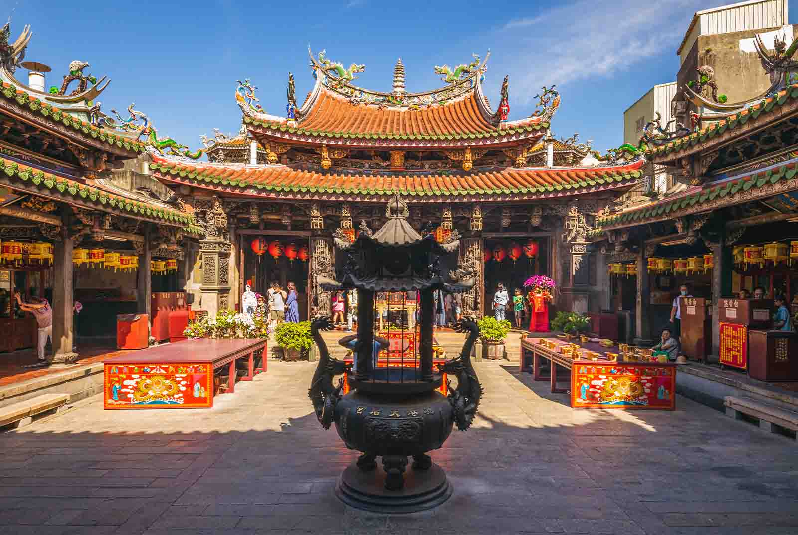
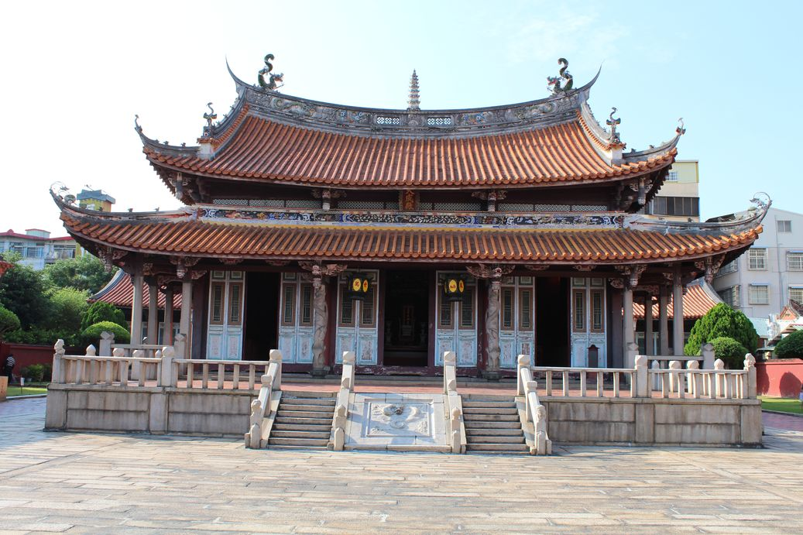
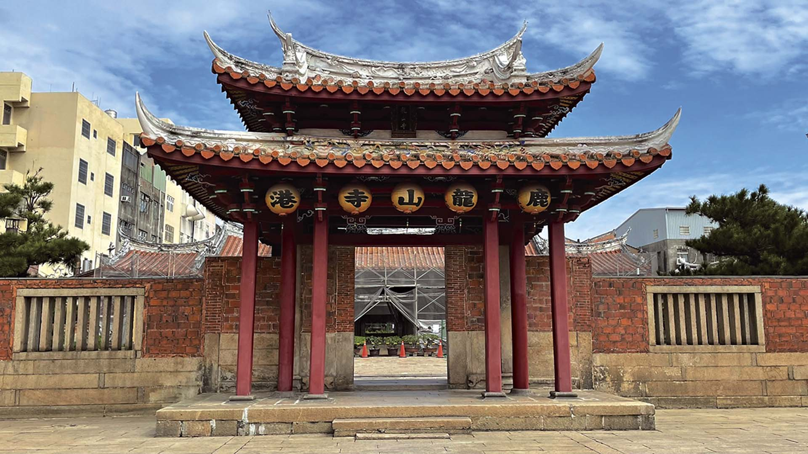
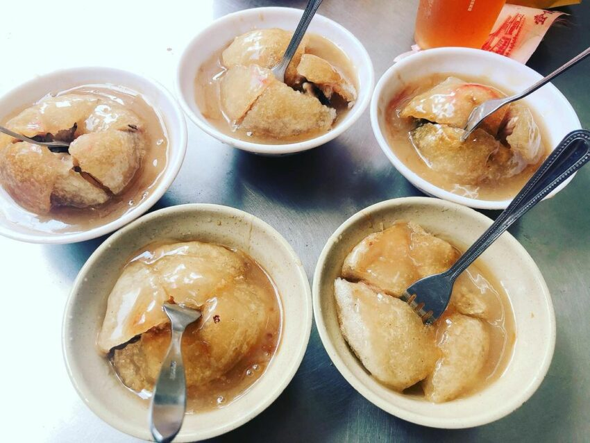

探索彰化
彰化是台灣西部的一個美麗城市，擁有豐富的歷史文化和風景名勝。以下是彰化著名的景點:

鹿港老街
鹿港是座文化的古都，人文薈萃，商業繁盛，清朝時期更因為貿易港口具通商之便，百貨充盈，經濟繁榮，飲食之美自然高人一籌，且因匯聚各地移民，也帶來許多不同口味的鄉土小吃。除味美的海鮮外，更有各式的糕餅與風味獨特的鄉土小吃，拜訪鹿港，除參觀古蹟、景點，領略工藝之美外，品嚐各式美食更是不容錯過，一次鹿港之旅，達到精美、知識與口腹多重的滿足，滿載而歸。

彰化孔子廟
彰化孔子廟創建於西元1726年，清雍正年間。現貌之格局係道光年間大修之結果，其中以主殿「大成殿」之建築雕刻最為精美。殿內奉有先賢聖人牌位，正中祀有孔子神龕一座，其上懸掛「道貫古今」、「與天地參」二匾，前為蔣經國先生所題頒；後為清乾隆皇帝所御賜，為臺灣中部文教發展之重要象徵。

鹿港龍山寺
創建於17世紀，西元1786年才遷至今址，歷經數次整修，始見今日之大格局，龍山寺壯觀精緻，是公認臺灣現存最完整最美的清代建築，其建築之精良、雕刻之巧妙居全臺寺廟之冠，如高大挺秀的山門、結構之細、冠蓋全臺的藻井、名畫家郭新林的經典彩繪、架構獨特的戲亭及雕窗、石雕……等無一不美；本廟又特別寬敞寧靜，兼具祭祀與潛修之用，有別於一般以香火為導向的寺廟，龍山寺無論在歷史、空間格局或建築藝術上，都值得您用心靈去感受。

彰化肉圓
肉圓是一種臺灣的特色街頭小吃，相傳彰化縣北斗鎮是肉圓的發源地，約誕生於19世紀末。 其名稱源自於其外觀，一般為直徑六至八公分左右的半透明扁圓形，除了最常見的圓形造型之外，亦有三角形的北斗肉圓，但目前不若圓形肉圓普及。